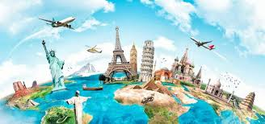

Tourism
The Ministry of Tourism designs national policies for the development and promotion of tourism. In the process, the Ministry consults and collaborates with other stakeholders in the sector including various central ministries/agencies, state governments, union territories and private sector representatives. Concerted efforts are being made to promote niche tourism products such as rural, cruise, medical and eco-tourism.The Ministry of Tourism maintains the Incredible India campaign focused on promoting tourism in India.
Top 5 places in Paris
- The Eiffel Tour
- Osray mueseum
- Versailles Palace
- Seine River
- The centre of Pompiduo
The Eiffel tower
Like all towers, it allows us to see and to be seen, with a spectacular ascent, a unique panoramic view of Paris, and a glittering beacon in the skies of the Capital. The Tower also represents the magic of light. Its lighting, its sparkling lights, and its beacon shine and inspire dreams every evening To visit the floors of the Eiffel Tower – there are three: first floor, second floor and the top – visitors can either purchase tickets in advance, from our official online ticket office, or on site the day of their visit, at the ticket office located on the esplanade below the Eiffel Tower As true love is supposed to triumph over all adversities and survive, Eiffel also survived. It has stood the test of time and survived difficulties. At this photoshoot, I chose a special place, where we can see clearly how beautiful Eiffel in Paris is The Eiffel Tower was built by Alexandre Gustave Eiffel for the 100th anniversary of the French Revolution. Even though Gustave Eiffel is credited for the Eiffel Tower it was actually two lesser known people who came up with the original drawing of it. These people were Maurice Koechlin and Emile Nouguier. These two men were the chief engineers of Eiffel’s engineering firm. The main architect was Stephen Sauvestre
Osray museum
The museum building was originally a railway station, Gare d'Orsay, located next to the Seine river. Built on the site of the Palais d'Orsay The station was constructed for the Chemin de Fer de Paris à Orléans and finished in time for the 1900 Exposition Universelle to the design of three architects: Lucien Magne, Émile Bénard and Victor Laloux. The Gare d'Orsay design was considered to be an "anachronism" Sculpture was in high demand in the 19th century and became widely used as a way to display a person's social and political standings. The style and ideology represented by many of the sculptures were out of fashion by the mid-20th century, and the sculptures were put into storage and no longer displayed. It wasn't until the conversion of the Orsay railway station into the Musée d'Orsay museum in the 1970s that many sculptures from the 19th century were placed on exhibit again. The substantial nave inside the new museum offered a perfect area for the display of sculptures. During the grand opening in December 1986 of the museum, 1,200 sculptures were present, brought in from collections such as the Louvre, state loans, and Musée du Luxembourg. The museum also obtained more than 200 sculptures before opening though donations of art connoisseurs, the lineage of artists, and people in support of the Musée d'Orsay

Versailles palace
The palace is owned by the government of France and since 1995 has been managed, under the direction of the French Ministry of Culture, by the Public Establishment of the Palace, Museum and National Estate of Versailles The Ambassadors' Staircase [fr] (Escalier des Ambassadeurs) was an imperial staircase built from 1674 to 1680 by François d'Orbay. Until Louis XV had it demolished in 1752 to create a courtyard for his private apartments
Seine river
The Seine rises in the commune of Source-Seine, about 30 kilometres (19 mi) northwest of Dijon. The source has been owned by the city of Paris since 1864. A number of closely associated small ditches or depressions provide the source waters, with an artificial grotto laid out to highlight and contain a deemed main source. The grotto includes a statue of a nymph, a dog, and a dragon. On the same site are the buried remains of a Gallo-Roman temple. Small statues of the dea Sequana "Seine goddess" and other ex-votos found at the same place are now exhibited in the Dijon archaeological museum.
The centre of pompiduo
Primarily a museum and centre for the visual arts of the 20th and 21st centuries, the Pompidou Centre houses many separate services and activities. Its museum of modern art brought under one roof several public collections of modern art previously housed in a number of other Paris galleries.
@Back to top
Halo Everyone!